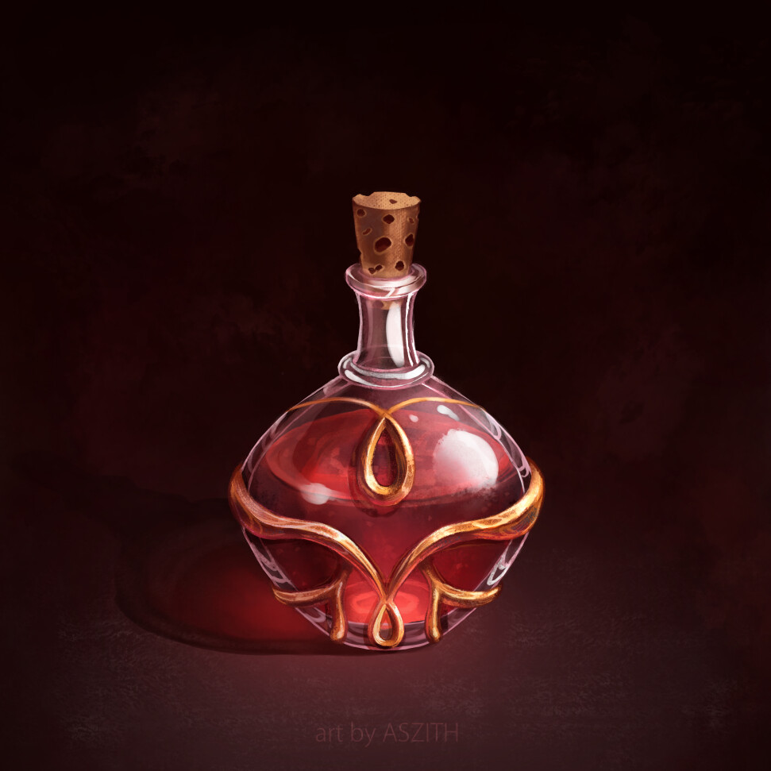

Potion of Healing(Common)
Description

You regain hit points when you drink this potion. The number of hit points depends on the potion’s rarity, as shown in the Potions of Healing table. Whatever its potency, the potion’s red liquid glimmers when agitated.
Upon consumption, the creature heals for 2d4+2 hit points
| Attributes |
| Rarity: | Common |
| Value: | 50 gp |
| Weight: | 0.5 lbs |
Ingredients
- 1 cup Purified Water
- 15 grams Powdered Unicorn Horn
- 35 grams Healing Herbs(Aramandus Rosemary)
- 100 grams Healing Crystal(Clear Quartz)
Instructions
- Step 1: Start by finding a quiet and peaceful space in your alchemical laboratory. Ensure that you have all the necessary components laid out before you.
- Step 2: In a clear glass vial, combine 1 cup of purified water and a pinch of powdered unicorn horn. This is where the magic happens, as unicorn horn is a rare and powerful magical ingredient.
- Step 3: Stir the mixture gently in a clockwise direction with a silver stirring rod. The clockwise motion is essential to unlock the magic within the unicorn horn.
- Step 4: After stirring, add two sprigs of the common healing herb, which will enhance the potion's healing properties. Let them float in the mixture for a moment.
- Step 5: Finally, place a small clear quartz healing crystal into the vial. This crystal will further amplify the potion's healing energy.
- Step 6: Seal the vial with a cork or stopper and leave it undisturbed in a cool, dark place for 24 hours. During this time, the potion will absorb and infuse with the magical properties of the unicorn horn, healing herbs, and crystal.
- Step 7: After the 24 hours, your Potion of Healing is ready to use. When you consume it, it will restore a moderate amount of hit points, rejuvenating your character in times of need.
Back to Main Page